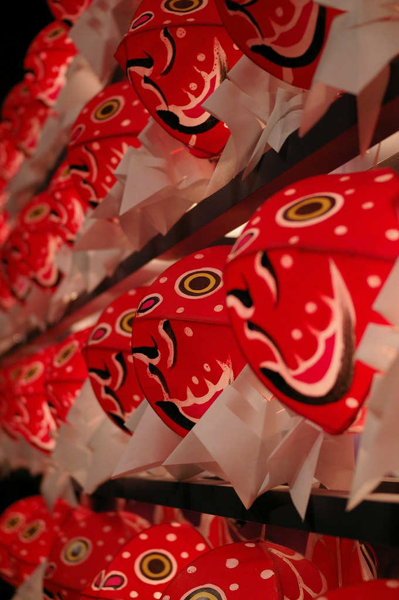
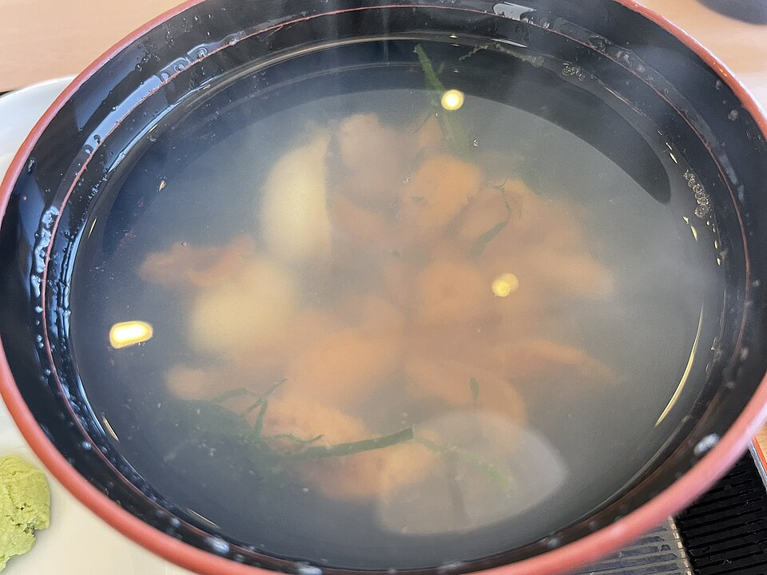
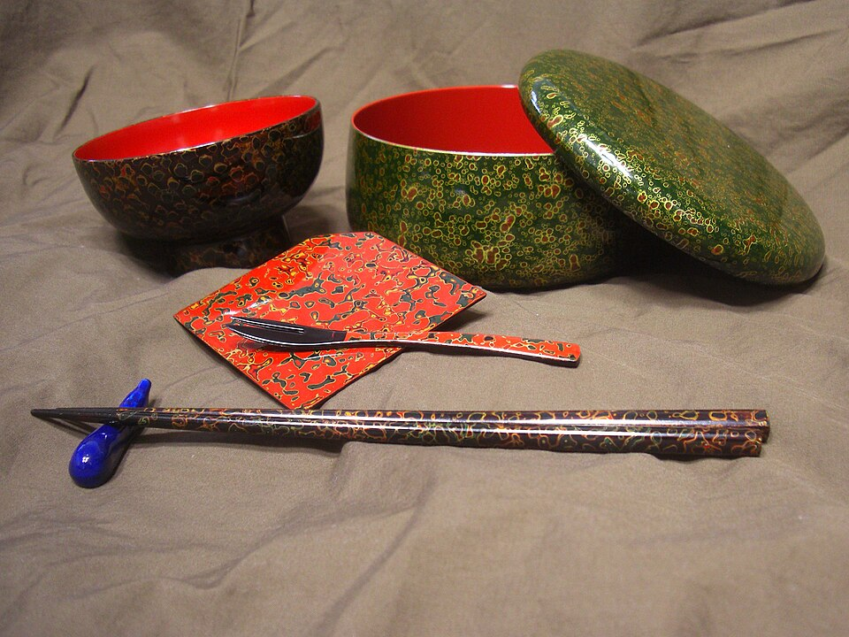
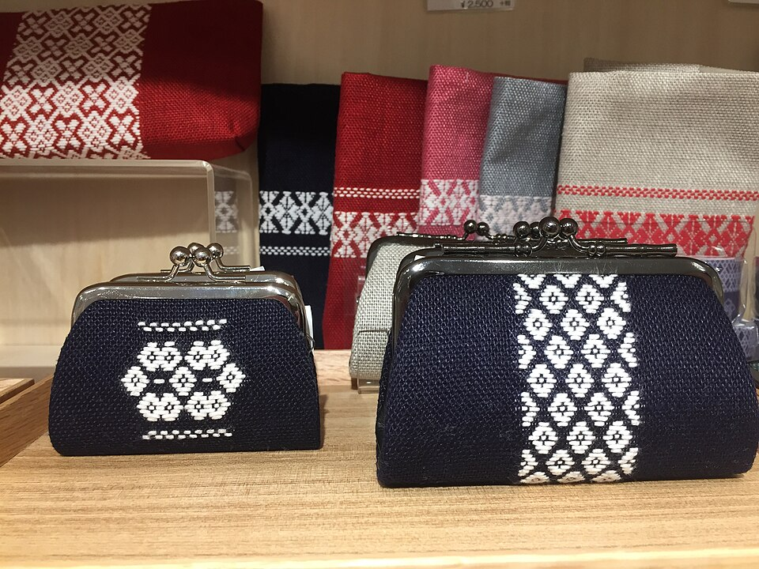
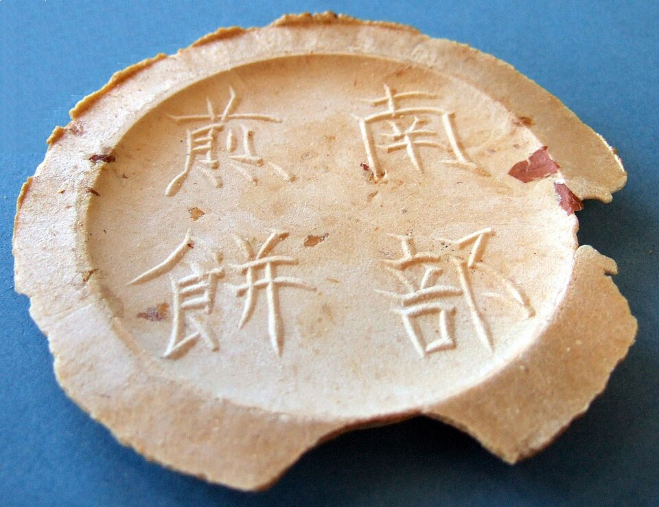
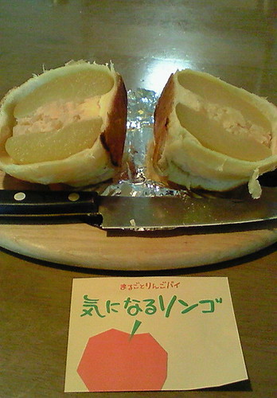
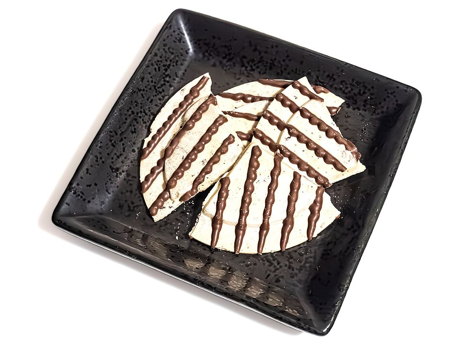
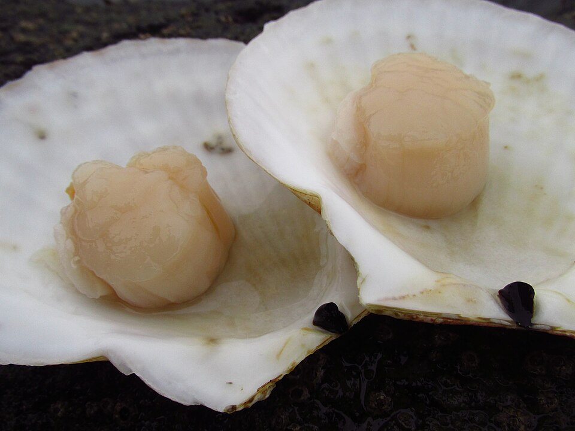
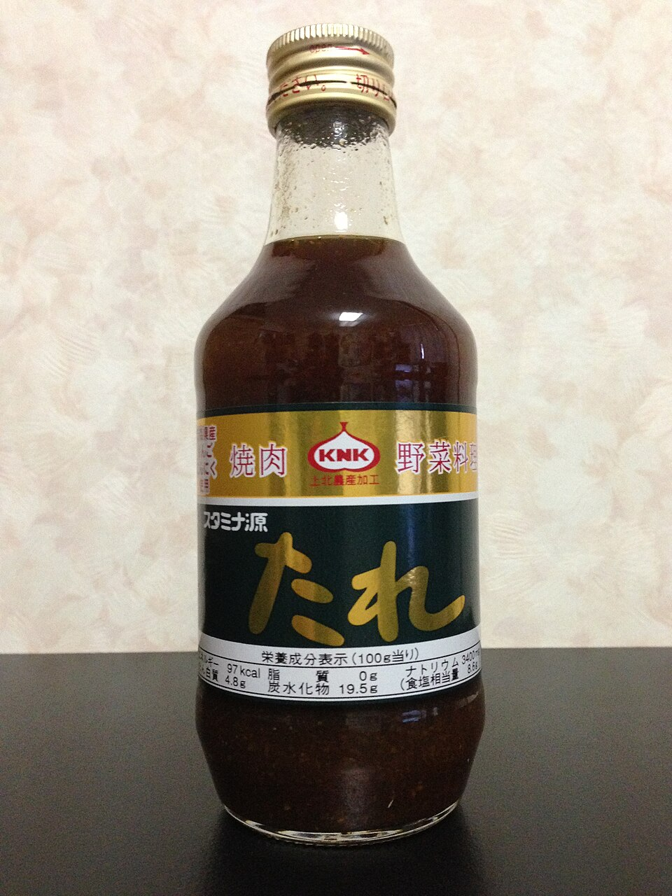

りんごだけでつくった
りんご茶
아오모리산 사과의 과육과 껍질만 넣은 티백. 카페인이 없다. 빨간 사과가 그려진 흰 봉투에 MACURE(마큐레)라고 적혀 있다.
- 양
- 1봉 티백 5개 (1개 약 7g)
- 가격
- 756엔 제조사 온라인 · 540엔 판매점 안내. 두 값이 달라 매장 가격표가 최종
- 운반
- 마른 티백이라 기내 가방에 넣어도 된다
- 못 찾으면
- 위 일본어 두 줄을 직원에게 보여 준다
2026.10.01 – 10.04 · 1인 · 아오모리
포장에 한국어가 없어서 매대에서 찾을 일본어를 먼저 적었다. 대부분은 역 빌딩 라비나 1층 한 곳에서 끝난다. 가격은 시설·제조사 공식에서만 옮겼고, 빈 칸은 현장 가격표를 본다.
← 동선 · 일정으로부탁받은 것 · 일정 안에서 여러 번 지나간다
りんごだけでつくった
りんご茶
아오모리산 사과의 과육과 껍질만 넣은 티백. 카페인이 없다. 빨간 사과가 그려진 흰 봉투에 MACURE(마큐레)라고 적혀 있다.
이미 가는 곳에서 산다 · 쇼핑 때문에 동선을 늘리지 않는다
매대에서 이 모양을 찾는다 · 「도해」는 사진이 없어 직접 그린 것








「현 1위」는 2026-09-01 아오모리현 추천기념품 총선거 그랑프리

이미지 검색 → 은 그 일본어 이름으로 구글 이미지를 연다. 아스팜 온라인 상품 페이지 → 가 있는 품목은 우리가 갈 매장의 공식 페이지라 사진과 현재가가 거기가 정확하다. 현장 가격표가 최종이다.
돌아올 때 위탁 23kg 1개 · 기내 10kg
사과차, 사과 과자 전부, 마늘 계열, 말린 가리비, 코긴자시, 히바, 금붕어 네부타, 호박.
라멘·카레·국물 계열 전부, 겐타레, 네부타즈케. 공항 면세점은 소규모이고 4일차는 09:50 버스라 「면세점에서 사서 기내로」 경로가 없습니다.
생사과는 한국 반입 금지입니다. 식물검역 대상이고 미신고 시 최고 500만원에 폐기. 현지에서 먹는 것으로 끝냅니다. 술은 전부 제외했습니다.
츠가루비드로만 해당합니다. 옷 사이에 끼우는 것으로 됩니다. 아스팜 왕복 뒤 마지막에 사야 들고 다니는 구간이 줄어듭니다.